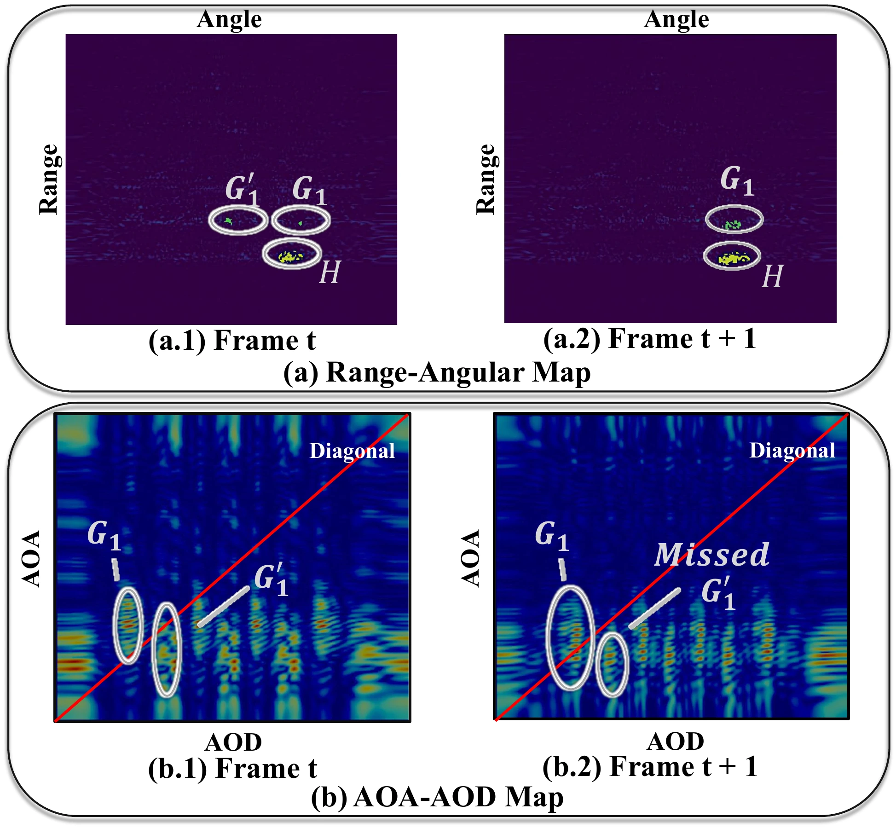

Component 01
Bi-Angular Multipath Enhancement
Standard radar measures only the Angle-of-Arrival. BAME additionally resolves the Angle-of-Departure — the direction the signal left the array before it bounced. Jointly reasoning over both angles identifies exactly which surface a return reflected off, turning that surface into a virtual mirror onto occluded space.
- Joint AoA + AoD estimation per return
- Closed-form inversion of ghosts to true positions
- Recovers structure invisible to direct-path sensing
